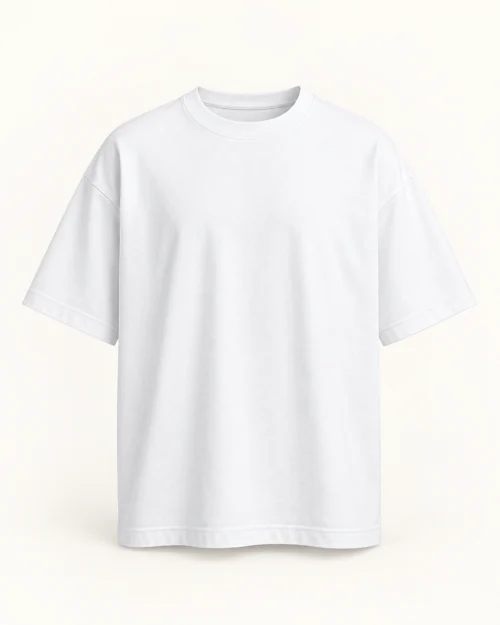

Wardrobe · Mobile product
Mymee
Mymee connects wardrobe organization and outfit creation. A piece can be found by category, organized into a space, and reused in different looks.
Design decision. Keep the outfit visible while browsing and swapping garments so each change is easy to assess.
View Mymee case study
Swap a wardrobe piece
Choose a piece to update the preview.